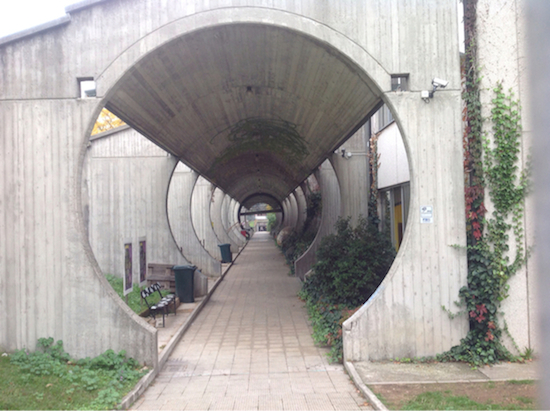

Sono Veronica, ho 20 anni e frequento il Politecnico di Milano.
Sono nata a Legnano il 3 Gennaio del 1998.
Vivo a Magnago, un paese di 9000 abitanti in provincia di Milano.
Vivo in una villetta bifamiliare con i miei genitori, mia sorella e il mio cane. Mia sorella ha 17 anni, frequenta la terza superiore e ama la moda. Il mio cane è una femmina e si chiama Ambra; ha paura di tutto e di tutti ma è molto dolce.
Ho studiato presso il Liceo Scientifico Arturo Tosi di Busto Arsizio, opzione scienze applicate.
Ho odiato la mia scuola perchè fin dal primo momento non mi sono piaciute le materie di indirizzo,
inoltre trovo che fosse troppo impegnativa per me che non sono amante dello studio.
Ecco la mia vecchia scuola:

Ho sempre fatto sport, ma nel corso del tempo ne ho cambiati diversi.
Ecco alcuni esempi di sport che ho praticato nella mia vita: